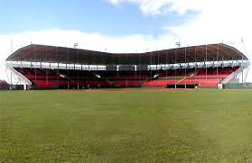
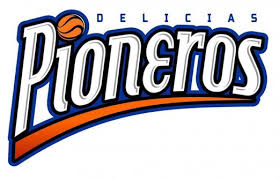
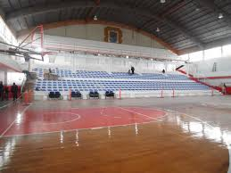

En el ámbito deportivo, Delicias cuenta con 2 equipos semiprofesionales protagonistas en las ligas estatales. Los Pioneros de Delicias, equipo de basquetbol cuya cede es el gimnasio municipal, ha sido un contendiente por los primeros lugares de la liga Estatal, cuyo nombre varía, siendo campeón recientemente en el 2008 y 2014 y actual subcampeón. Cuenta con gran apoyo de la comunidad y recientemente se ha incorporado talento extranjero con la finalidad de aumentar la competitividad del equipo y la liga en general. El otro deporte importante en la región es el béisbol con el equipo de los Algodoneros, quienes desde 1957 han sido grandes protagonistas de la Liga Estatal de Beisbol6 y en algunas ocasiones la base del equipo representativo del estado a nivel nacional en una de las ligas más competitivas del mundo. El equipo cuenta con 13 títulos desde el inicio de su participación, el más reciente en el 2010 y es el actual subcampeón. Cabe mencionar que este deporte cuenta con una gran popularidad en la zona y es una de las principales atracciones para los amantes del deporte. En el 2003 se inauguró el Gran Estadio Delicias con una capacidad de 43227 personas, para mejorar la calidad del espectáculo con estas nuevas instalaciones.
|  |  |  |